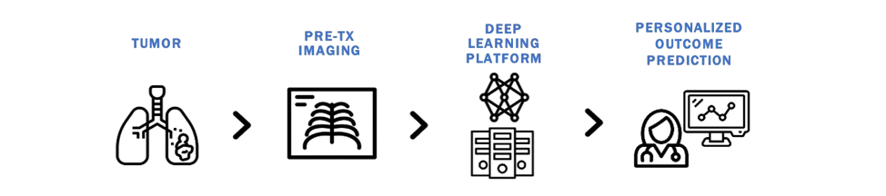
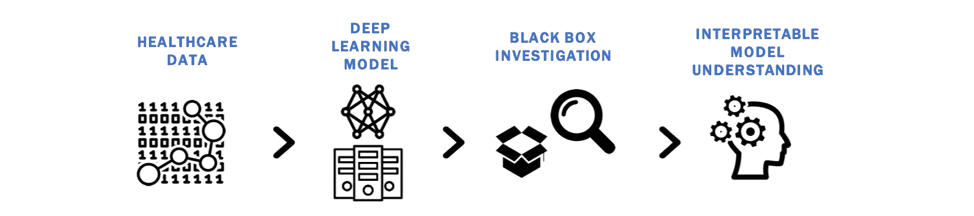
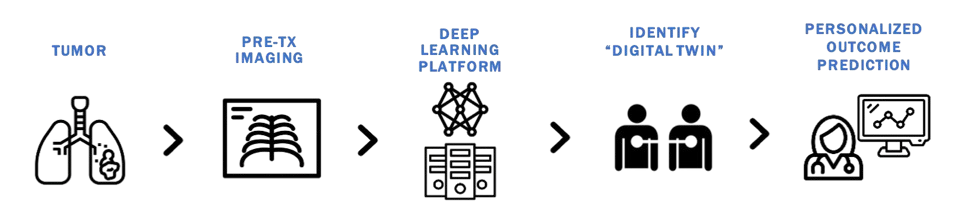

Risk stratification in oncology remains clinically challenging, with heterogeneity in outcomes among similarly staged patients. There is an increasing need for cost-effective biomarkers which accurately estimate cancer outcomes. Although molecular biomarkers have promise, they often require additional testing, specialized equipment, and fail to capture intra-tumoral heterogeneity. We are interested in studying the utility of deep learning methods to derive quantitative 'imaging-based biomarkers' from pretreatment diagnostic images that provide accurate personalized outcome estimates. Our interest spans multiple diagnostic imaging modalities (CT, MRI, Ultrasound) and numerous diseases including lung cancer, lymph nodes, gliomas, brain metastases, and cardiovascular disease.

Deep learning models can easily overfit training data, failing to generalize to external validation sets. Our work investigates: (1) the generalizability of deep learning models when analyzing different types of healthcare data (imaging, clinical text, claims data); (2) methods to a priori identify models that generalize well; and (3) strategies to improve the generalizability of deep learning models across heterogeneous healthcare data streams.
Although there is significant promise in the accuracy of deep learning models to classify diagnostic images, a potential road-block in their clinical implementation is the lack of interpretable parameters about their decision processes (the 'black box' problem). We are interested in identifying methods to make deep learning models more interpretable and exploring the impact such methods have on physician use of deep learning tools in clinical practice.

Deep learning models transform high dimensional data into learned feature spaces that capture meaningful patterns for tasks such as classification and regression. Our work explores how these feature spaces can be used to identify patients with similar biological or clinical characteristics. By developing and evaluating similarity metrics within these learned representations, we aim to match patients with "Digital Twins" to enable personalized outcome predictions.

The clinical implementation of AI tools requires a better understanding of theinvolved stakeholders (patients, physicians, etc.) and their perception of these emerging technologies. Through a collaboration with the Department of Health Policy at Weill Cornell Medical College, we are using mixed-method approaches to investigate patient and physician perceptions of AI including on topics of regulation, liability, and implementation.